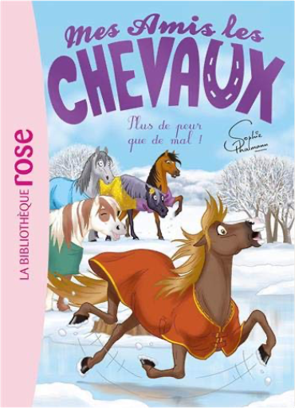

Books
Movies
Albums
Videogames
Games
BD
BD Camille
Blu-ray
Business
Camille
Comics
Cooking
Lego
Manga
Pauline
Photography
Star Wars
Travel
TV Shows
Un livre dont vous êtes le héro
Vinyl
Walt Disney
73
74
75
76
77
mes amis les chevaux, tome 24 : que le meilleur gagne !
sophie thalmann
mes amis les chevaux, tome 25 : la tempête de neige
sophie thalmann
mes amis les chevaux, tome 26 : un poney très coquet
sophie thalmann
mes amis les chevaux, tome 27 : mission galop !
sophie thalmann

mes amis les chevaux, tome 29 : plus de peur que de mal !
sophie thalmann
mes amis les chevaux, tome 30 : au feu !
sophie thalmann
mes amis les chevaux, tome 31 - un sacré chantier !
sophie thalmann
mes amis les chevaux, tome 33 - vive la montagne !
sophie thalmann
the creative habit
twyla tharp
4.5
lightroom 3 par la pratique
gilles theophile
42 km 195
bernard thomasson
l'incroyable aventure de pierre lapin
emma thompson
73
74
75
76
77


 Made with Delicious Library Made with Delicious Library
Made with Delicious Library Made with Delicious Library